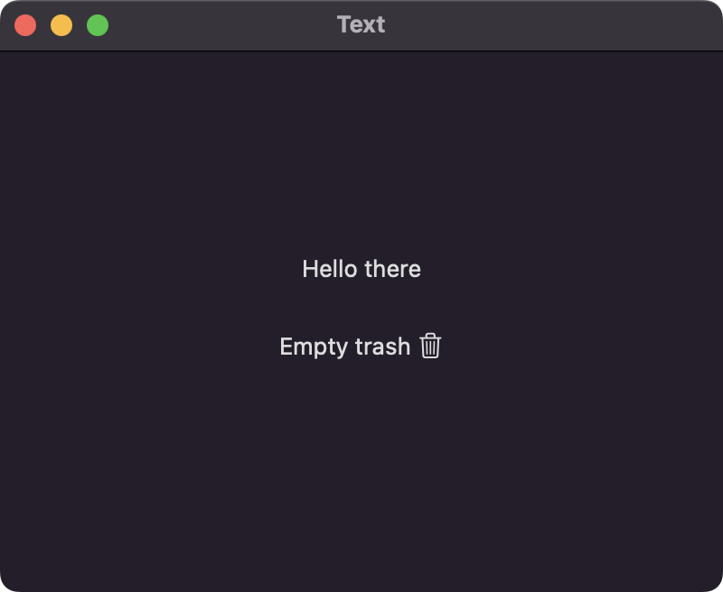
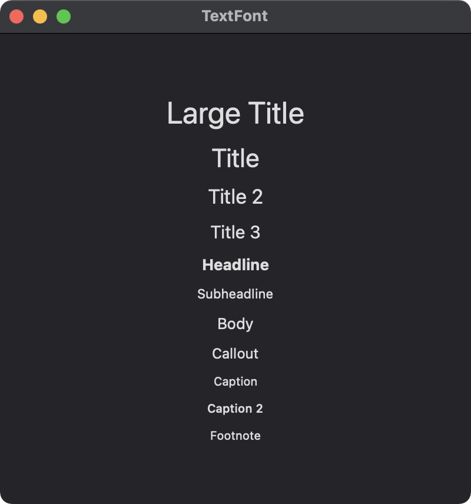
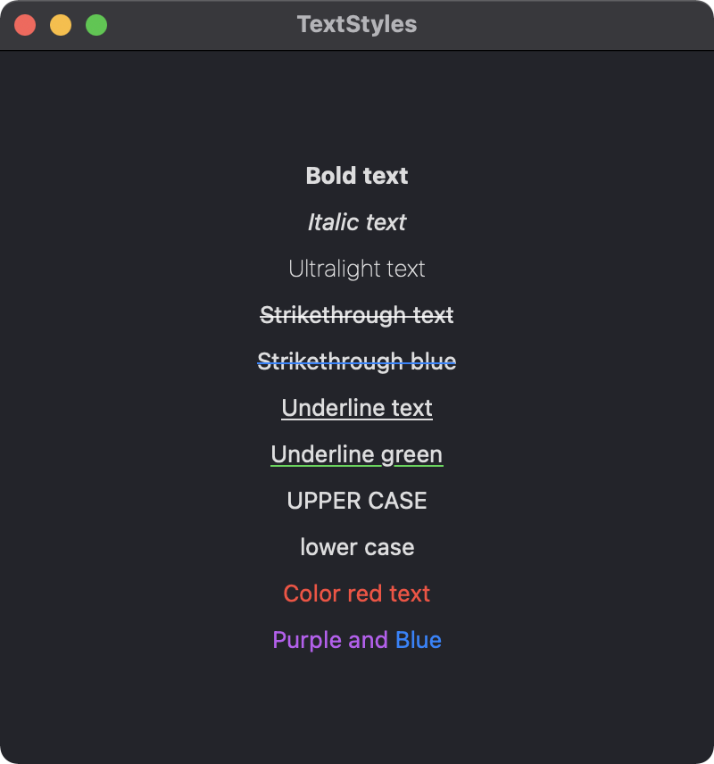
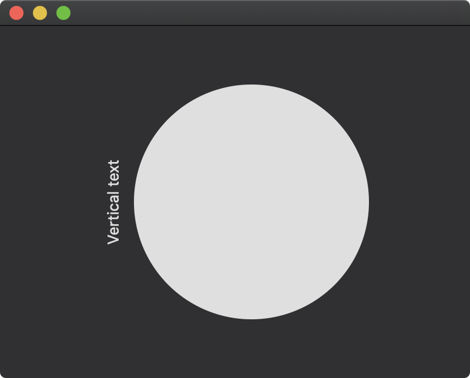

A Text view displays one or more lines of read-only text.

import SwiftUI
struct ContentView: View {
var body: some View {
VStack {
// Basic text view
Text("Hello there")
// Text with inline image
Text("Empty trash \(Image(systemName: "trash"))")
.padding()
}
.frame(width: 400, height: 300)
}
}
Use the font instance method to apply a specific font to an individual Text view.

import SwiftUI
struct ContentView: View {
var body: some View {
VStack(spacing: 10) {
Group {
// Large title font
Text("Large Title").font(.largeTitle)
// Title font
Text("Title").font(.title)
// Title 2 font
Text("Title 2").font(.title2)
// Title 3 font
Text("Title 3").font(.title3)
// Headline font
Text("Headline").font(.headline)
// Subheadline font
Text("Subheadline").font(.subheadline)
}
Group {
// Body font
Text("Body").font(.body)
// Callout font
Text("Callout").font(.callout)
// Caption font
Text("Caption").font(.caption)
// Caption 2 font
Text("Caption 2").font(.caption2)
// Footnote font
Text("Footnote").font(.footnote)
}
}.frame(width: 400, height: 400)
}
}
The Text view in SwiftUI provides several modifiers to customize the appearance and style of the text.

import SwiftUI
struct ContentView: View {
var body: some View {
VStack(spacing: 10) {
Group {
Text("Bold text").bold()
Text("Italic text").italic()
Text("Ultralight text").fontWeight(.ultraLight)
Text("Strikethrough text").strikethrough()
Text("Strikethrough blue").strikethrough(color: .blue)
Text("Underline text").underline()
Text("Underline green").underline(color: .green)
}
Group {
Text("Upper case").textCase(.uppercase)
Text("Lower case").textCase(.lowercase)
Text("Color red text").foregroundColor(.red)
Text("Purple and ").foregroundColor(.purple) + Text("Blue").foregroundColor(.blue)
}
}
.frame(width:400, height: 400)
}
}
Vertical text can be accomplished by rotating a text view 90 degrees. To rotate the frame of the text view, the fixed size modifier must be implemented along with defining the frame size.

import SwiftUI
struct ContentView: View {
var body: some View {
HStack {
Text("Vertical text")
.rotationEffect(.degrees(-90))
.fixedSize()
.frame(width: 20, height: 180)
Circle()
.frame(width: 200)
}
.frame(width: 400, height: 300)
}
}
Gavin Wiggins © 2024